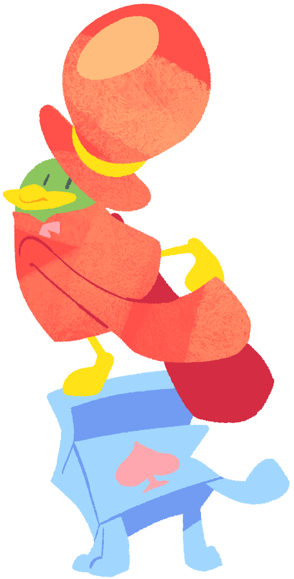

Kappado (Male)A kappa (hence his name) who is mostly hidden in his oversized red clothes. He is fairly decent at magic tricks, especially for the comfort of others. His magic tricks fail sometimes, although his looks have gotten him some fans already. He's also the entry person of the Magic Group. He appears as the first shopkeeper in Kururin Squash! |
 |